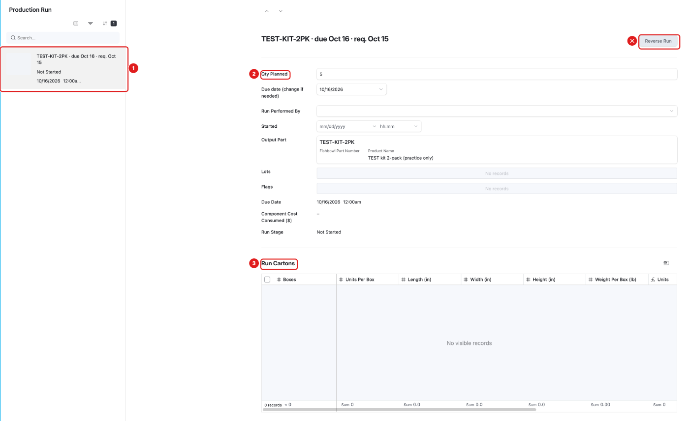
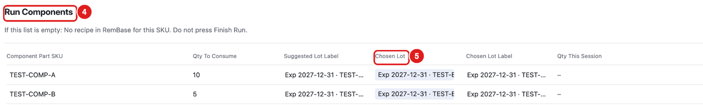
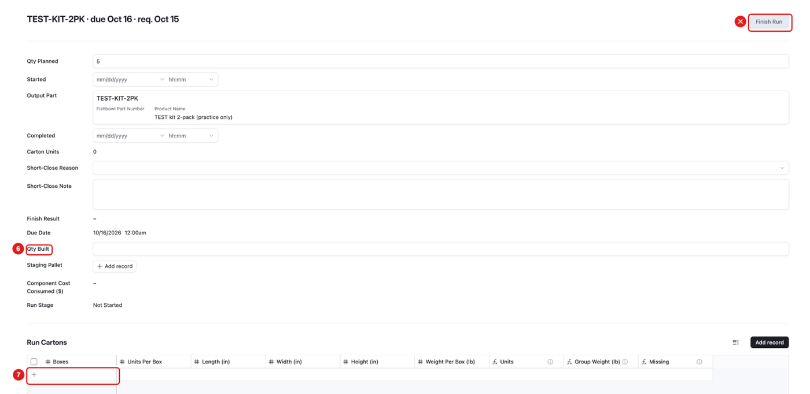
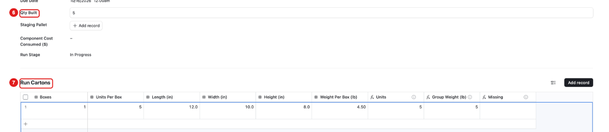

What this page is for
A production run is one job where we build a product from its parts. Example: a 2-pack is built from two single items.
Who uses it: Chad and Sabith on the floor. Becca plans the runs.
Before December 1, enter real runs in Fishbowl. In RemBase, practice only on your own practice run (TEST-PRACTICE-RUN-BECCA, -CHAD or -SABITH).
Never press Finish Run on a real run before December 1. You may press it on your own practice run.
Sub-pages
| Sub-page | What it is for |
|---|---|
| Production Run | The office view: plan, components and lots. |
| Production Run – Floor | The floor view: what you built, cartons and pallet. |
Task: find a run and check its parts
Click Production Run in the menu.
Click the run in the list (1). The list is sorted by due date.

Check Qty Planned (2). This is how many to build.
Check Output Part. This is the product you build.
Run Cartons (3) will show the boxes after you enter them on the Floor page.
Scroll down to Run Components (4).

- Component Part SKU: each part you need.
- Qty To Consume: how many of that part.
- Chosen Lot (5): which lot to take. RemBase picks the lot that expires first.


If Run Components is empty, RemBase has no recipe for this product. Do not build. Tell Becca.
Task: enter what you built (Floor page)
Click Production Run – Floor in the menu.
Click your run in the list.

Type the number you built in Qty Built (6).
In Run Cartons, click the + (7) to add a carton row.
Fill in the row. Press Tab to go to the next box:
- Boxes: how many boxes of this size.
- Units Per Box: how many units in each box.
- Length, Width, Height: box size in inches.
- Weight Per Box (lb): weight of one full box in pounds.
If you have boxes of different sizes, add one row per size.
If you built fewer than planned, choose a Short-Close Reason and write a Short-Close Note.

What you should see

- Qty Built shows your number.
- Run Stage changes to In Progress.
- Units in Run Cartons = Boxes × Units Per Box. It should match Qty Built.
- Missing is empty when the carton row is complete.
Task: finish the run
When the run is built and the cartons are entered, Finish Run takes the parts out of stock and adds the finished product. On a real run it also adds the units to the next Amazon shipment.
Practice: you may press Finish Run on your own practice run. Your practice run is not linked to any Amazon shipment, and its Staging Pallet is TEST-BIN, so the finished TEST kits go to TEST-BIN. Do not change the Staging Pallet.
- Check Qty Built and the Run Cartons again.
- Click Finish Run at the top right. Press it once.
- Read Finish Result:
- DONE … – the run is finished.
- NOT DONE: … – nothing was changed. The message says what to fix, for example “add the cartons” or “the cartons hold 4 units but Qty built is 2”. Fix it and press Finish Run again.
- Real runs: never before December 1. RemBase also refuses Finish Run on a run with a real part until December 1: Finish Result says NOT DONE and nothing moves. After December 1, Becca will tell you who presses it.
- Reverse Run undoes a finished run. Only Becca or Adam may use it.
Common mistakes
- Pressing Finish Run on a real run. Before December 1, only on your own practice run.
- Pressing Finish Run twice. Press once and read Finish Result.
- Units do not match Qty Built. Check Boxes × Units Per Box.
- Weight of the whole stack instead of one box. Type the weight of one box.
- Taking a different lot than Chosen Lot. Use the lot RemBase picked, or tell Becca.